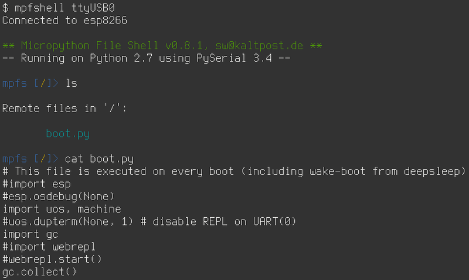

Про математический обман

Недавно моя хорошая подруга написала вот этот пост, в котором говорится о том, что многие люди не хотят считать, в том числе даже и свои средства, прикрываясь тем, что это для них сложно и вообще, они гуманитарии. Хотел бы продолжить данную тему и привести другие примеры.
Наш мозг обмануть несложно. Мозг ленив, он вообще не любит лишнюю работу и поэтому там, где считает это возможным, идёт по пути наименьшего сопротивления, чем и пользуются те же кредитные агенты и маркетологи. Пожалуй, самый наипримитивнейший способ, которым пытаются обмануть наш мозг - это ценники в магазинах. Все эти "9999" рублей, которые в представлении маркетологов на подсознательном уровне должны якобы сформировать представление о том, что цена товара не десять тысяч, а девять с чем-то. А это "что-то" видимо, следуя той же логике, должно восприниматься как нечто несущественное. Да, это самый примитивный пример и многие наверное думали об этом в ключе: "Да кто вообще на это клюёт? Это же очевидно!". Возможно, некоторым это казалось смешным в своей наивности.
Да, мы можем тихонько посмеяться над убогими, на ком срабатывают и такие нехитрые методы, мы-то сразу при подсчёте покупок округляем цены в бОльшую сторону, не правда ли? Но стОит сделать маааленький шажок в сторону, стоит чуть-чуть усложнить задачку, как сразу же мы клюём на удочку, стОит нам подсунуть нужную цифру. И жертвой вполне может стать человек, не считающий, что у него гуманитарный склад ума. Не смотря на то, что для успешного обхода большинства граблей хватит общего образования в рамках пяти классов школы. Но сначала про чуть более сложное, но тем не менее, очевидное на бытовом уровне вымогательство.
Теги: мысли-вслух, жизненное
Про аспекты выбора

Шашечки или ехать?
Как-то раз много лет тому назад мне позвонила знакомая девушка, сказала, что находится в Москве, хотела бы купить себе ноутбук и ей нужна моя помощь в выборе. Что-ж, время у меня тогда было и я по доброте душевной решил помочь. Я спросил, для каких целей приобретается ноутбук, на что получил один из стандартных ответов - редактирование документов, фильмы, музыка, интернет. Отдельными требованиями была компактность и автономность, чтобы была возможнось комфортно носить его с собой на учёбу. Осведомился о бюджете и, спустя какое-то время, потраченное на изучение обзоров, рейтингов и отзывов, нашёл замечательный вариант 12'' нетбука по отличной цене. Перезвонил девушке, сообщил, номер товара, адрес магазина, где этот нетбук есть в наличии, и даже то, как ей из текущего её местонахождения на метро проехать к нужному месту. Меня душевно поблагодарили и попрощались, после чего я об этой истории благополучно забыл на какое-то время.
Прошло полгода, после чего я к этой девушке попал на день рождения. На столе у неё стоял самсунговский ультрабук, стоимостью в 3 раза выше, чем то, что я рекомендовал и в два раза дороже озвученного изначально бюджета. Полюбопытствовал у хозяйки, почему она взяла именно его.
- "Ну он красненький, симпатичный такой, мне нравится!"
Теги: мысли-вслух
Про подкасты, аудиокниги, навыки восприятия и время

Подкасты
Не смотря на то, что на дворе уже не начало двухтысячных, иногда (к счастью, всё реже и реже) при употреблении понятия "подкаст" я получаю в ответ недоумевающий взгляд и вопрос - "Что это?". Подкаст-культура в нашей стране распространена существенно слабее, нежели в США, но тем не менее, нам тоже есть, чем гордиться и что слушать.
На всякий случай, если меня читает кто-нибудь, кто до сих пор не представляет, что это такое, я кратко объясню. Ближе всего к понятию "подкаст" наверное находится термин "радиопередача". Подкасты могут быть тематические (что чаще всего) и, соответственно, нетематические. Подкасты могут иметь разный формат. Самый частый - это несколько ведущих, обсуждающих список заранее подготовленных тем. Так же к ведущим могут присоединиться приглашённые гости. Иногда ведущий может быть и один. Подкаст так же может полностью состоять из зачитываемых статей или отрывков книг, может содержать музыкальные произведения или их фрагменты.
Теги: мысли-вслух, книги, подкасты
Про евреев, чувства верующих и законы
Сразу хотел бы предупредить, что никого не хочу обидеть или оскорбить. Это взгляд со стороны на вещи и события, происходящие вокруг. А тема меж тем достаточно щекотливая.
Сочетание несочетаемого
Моя прабабка была еврейкой. С помощью нехитрых вычислений, доступных всем со школьной скамьи, можно легко подсчитать, что номинально я на 12,5% еврей. Сам же я себя евреем не считаю абсолютно, потому как это не только национальность, но и религия, а от любой религии я крайне далёк, ибо рождён был в Советском Союзе, сделан был в СССР. С детства я придерживался материалистических взглядов на жизнь, лет в шесть уже знал, кто такой Дарвин, а в семь в общих чертах представлял возможные механизмы появления и развития вселенной от большого взрыва и до наших дней. Одним словом, почвы для развития во мне религиозных взглядов на жизнь не было и меня это вполне устраивало.
А ещё у меня есть хороший друг. Мы познакомились с ним в университете и до сих пор общаемся, хотя уже и не так часто. Друг является чистокровным породистым евреем, причём достаточно религиозным. И при этом он всегда был одним из первых почти по всем показателям в нашей группе (мы обучались на мехмате), а впоследствии какое-то время преподавал математический анализ в ПГУ. Для меня всегда было огромной загадкой, как в одной и той же голове умещается религия и огромное количество знаний плюс критическое мышление, которые требуются для выживания обучения на мехмате? Почему они не вступают в конфликт друг с другом? Почему навыки анализа, полученные в одной области не применяются к другой?
Я не имею ничего против религии - каждый имеет право верить во всё, во что пожелает, пока это не задевает свобод других людей. Но для меня это странно. Часть знаний просто является привилегированной, не подлежащей критике и противоречащей остальной картине мира.
Теги: мысли-вслух
Установка Micropython на esp8266 и утилита mpfshell

Я давно и прочно люблю Python. Это уникальный язык, позволяющий говнокодить заниматься прототипированием с очень высокой скоростью и уровнем комфорта. Мне нравится его синтаксис, его простота, его универсальность и гибкость. Так же мне интересны микроконтроллеры, поэтому за проектом под названием MicroPython я слежу уже давно. Вообще, создание реализации интерпретатора Python3, пусть даже и в очень обрезанном виде для микроконтроллеров - это нечто на мой взгляд удивительное. Но куда полезнее от восторгов перейти к практике. Заодно расскажу про одну интересную утилиту, которая существенно облегчает жизнь.
Теги: esp8266, micropython
Про оптимизацию, тишину, эволюцию, нестандартные решения и домашнюю сеть.

Достаточно давно я собрал свой первый домашний сервер. И довольно много сил я тогда положил на то, чтобы сделать его как можно более тихим, маленьким и потребляющим минимум энергии. Я сменил радиаторы на процессеоре и северном мосту с целью увеличить площадь рассеивающей поверхности. Я искал самые тихие кулеры, я занижал частоту процессора, я сменил кулер в блоке питания и жёсткий диск я выбирал тоже исходя из теж же требований - тихий и потребляющий минимум энергии. В конце-концов, я переместил свой сервер в диван. Мне тогда нужна была платформа для экспериментов и само-собою подразумевалось, что она будет работать 24 часа, 7 дней в неделю.
Зачем ненормальному человеку может быть нужен сервер? Во-первых, это файлопомойка; во-вторых, это медиакомбайн, соединённый с музыкальным центром и имеющий доступ ко всем твоим аудиозаписям, а заодно и к нескольким десяткам онлайн радиостанций; в-третьих файрвол, позволяющий тонко управлять различными подключениями и роутингом между двумя провайдерами и рабочей сетью; в-четвёртых - VPN; в пятых... Продолжать можно долго.
Теги: админское, automatization, networking, python
О найфомании и ножах как таковых

Вместо предисловия:
- Сколько ножей у обычного человека?
- У обычного человека всегда при себе 2-3 ножа.
- Но это же человек, который увлекается ножами!
- У человека, который увлекается ножами, с собой 5-6 ножей.
- Но это же маньяк!
- Нет, у маньяка с собой 10 ножей.
- Но это уже странный человек!
- У странного человека при себе вообще нет ножей.
- Но это как раз обычный человек!
- Нет, мы уже говорили, что у обычного человека при себе 2-3 ножа...
(c) Старинный найфоманский анекдот
Многим моим друзьям известно, что я неравнодушен к ножам. Я уже писал про кухонные ножи, но к ним я не испытываю каких-то особых чувств, это для меня просто инструменты и да, меня раздражает, когда я вижу, как неплохим микроскопом забивают гвозди и громко жалуются на то, что и этот микроскоп оказался никуда не годен.
Совсем другое дело - ножи, не относящиеся к кухонным. Это как раз те вещи, которые задевают струны моей души. Кажется, это началось с седьмого класса, когда я посмотрел советский мультфильм "Маугли", где главный герой из всех несметных сокровищ выбрал себе кинжал, повесил его на шею и стал с ним неразлучен. Для меня нож - являет собой нечто большее, чем сумма полоски стали и рукояти. За понятием "нож" скрывается целый мир. Это культура, эстетика, это один из древнейших инструментов, прошедший долгий эволюционный путь, длиною в тысячи лет, это миллионы (я не шучу) людей, объединённых общими интересами, клубы фанатов той или иной модели, праздничные новогодние каталоги фирм-производителей, многочисленные обзоры и тесты на ютубе, соревнования и школы ножевого боя, сотни марок сталей, кустари-одиночки и бренды с исторей, насчитывающей десятки, а то и сотни лет, произведения искусства в конце-концов. Издавна ножи украшали резьбой, травлением, в рукоять икнрустировали драгоценные камни, использовали ценные породы дерева и драгоценныe металлы.
Вы можете себе представить многотысячную армию фанатов какой-то определённой модели плоскогубцев? Или строительный молоток с рукоятью из чёрного дерева, отделанного серебром? Или, скажем, огромную выставку ножовок по металлу, на которую слетаются люди со всей страны, а то и из-за рубежа? Глянцевый пятидесятистраничный каталог "Лучшие лопаты ноября 2018" фирмы X?
Теги: knifes
Вызов метода класса по имени в python

Недавно столкнулся с одной простой задачей, с которой раньше cталкиваться не приходилось, поэтому оставлю себе здесь запись в качестве памятки. В MicroPython необходимо было для одного класса написать встроенный менеджер задач - некий аналог cron и таймера, который бы позволил микроконтроллеру в общем цикле вызывать методы этого же класса (например, проверка состояния GPIO, датчиков, подключения к WiFi, MQTT и т.п.) по расписанию или через заданное количество времени после наступления какого-либо события. В числе прочего планировалась возможность фильтровать задачи по имени для динамической расстановки их приоритетов и я счёл, что лучшим вариантом в этом случае будет хранение в структуре данных имени метода, затем, возможно, создание словаря, ключами которого будут имена методов. Заодно и имя метода в виде строки куда проще передавать в другой метод в качестве параметра плюс аттрибуты отдельным кортежем во втором параметре. Использовать для обратного преобразования (да и для практически любых других задач) eval - мягко говоря, дурной тон, поэтому пришлось мучать гугл. Решение оказалось не простым, а очень простым. Я уже устал удивляться подобному при программировании на python, но всё ещё продолжаю это делать.
Теги: python
Отправка логов с OpenWRT/LEDE в syslog и обработка событий
 Вдогонку к статье о syslog-ng решил сделать дополнение о том, как завернуть логи с OpenWRT и настроить реакцию на соответствие какому-нибудь фильтру. Дома у меня есть два Xiaomi MiWifi 3G (оказалось крайне доступным и достойным по характеристикам устройством), три штуки Netgear WNR3500L, которые в текущий момент работают в качестве гигабитных свичей в разных частях квартиры и Nexx 3020 для экспериментов. Одним словом, правило для сохранения логов должно быть общее для всех этих устройств, чтобы не писать шесть отдельных конфигурационных файлов. Начать я решил со своего основного Xiaomi роутера с хостнеймом gw01, на котором стоит OpenWRT 18.06.
Вдогонку к статье о syslog-ng решил сделать дополнение о том, как завернуть логи с OpenWRT и настроить реакцию на соответствие какому-нибудь фильтру. Дома у меня есть два Xiaomi MiWifi 3G (оказалось крайне доступным и достойным по характеристикам устройством), три штуки Netgear WNR3500L, которые в текущий момент работают в качестве гигабитных свичей в разных частях квартиры и Nexx 3020 для экспериментов. Одним словом, правило для сохранения логов должно быть общее для всех этих устройств, чтобы не писать шесть отдельных конфигурационных файлов. Начать я решил со своего основного Xiaomi роутера с хостнеймом gw01, на котором стоит OpenWRT 18.06.
Теги: админское, docker, logging
Про ярлыки и квадратно-гнездовой способ мышления

Один мой друг натолкнул меня на мысли о "навешивании ярлыков". Что же в сущности такое - эти ярлыки и зачем их на кого-то навешивать? На мой взгляд всё очень просто. Ярлыки - это принадлежность к некоей категории или нескольким категориям. Наш мозг склонен структурировать информацию, потому что в таком виде ей легче оперировать и её легче хранить. Мозг бережёт себя от перегрузок, переходя на более высокий уровень абстракции. На этом уровне он отбрасывает массу незначительных, как ему кажется, деталей, создавая ассоциативную связь вида "Вася" -> "Урод". Для создания данной связи ему нужно, чтобы в категории "Уроды" уже находился некий индивид, скажем, "Петя", или группа индивидов, например, "Байкеры", которые имеют некие признаки или совершили некие действия подобные действиям нашего гипотетического Васи.
Теги: жизненное, мысли-вслух